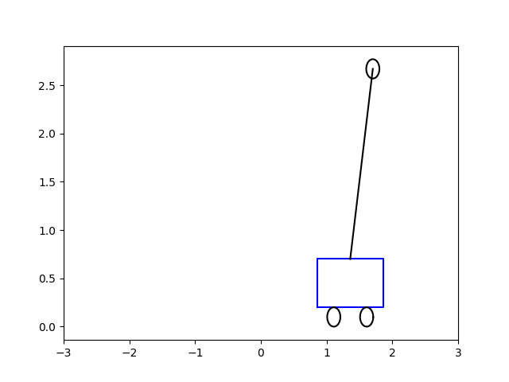
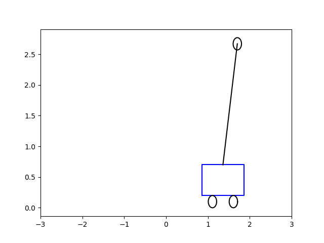

Direkli Araba, Ters Sarkaç (Cart Pole, Inverted Pendulum)
Sadece sağa ve sola giden bir araba üzerinde duran bir direk var. Bu direğin üzerinde bir kütle var; acaba bu direği sadece arabaya uygulanan bir $F$ kuvveti ile sağa sola götürerek dengeleyebilir miyiz? Belki bazılarımız elimiz üzerinde bir sopayı dengelemeye uğraşmışızdır, yapmaya çalışacağımız buna çok benziyor.
Sistemin hareket denklemlerini modellemek için Lagrange formüllerini kullanacağız. $L = K - P$ üzerinden,
$$ L = \frac{1}{2} M v_1^2 + \frac{1}{2} m v_2^2 - m g \ell \cos\theta $$
$v_1$ arabanın hızı, $v_2$ ise sarkacın hızı. $x(t)$ arabanın yerini belirleyecek. Hızları yer türeviyle değiştirebiliriz, mesela $v_1^2 = \dot{x}^2$. Sarkacın hızı $v_2$'yi onun yeri üzerinden tanımlamak gerekiyor, sarkacın yeri nedir? Onun yatay, dikey kordinatlarına bakalım, dikey $x-\ell\sin\theta$, dikey $\ell\cos\theta$. Genel $v^2 = v_x^2 + v_y^2$ formülü üzerinden,
$$ v_2^2 = \left( \frac{\mathrm{d}}{\mathrm{d} t} (x - \ell\sin\theta) \right)^2 + \left( \frac{\mathrm{d}}{\mathrm{d} t} (x - \ell\cos\theta) \right)^2 $$
$v_2$'yi basitleştirince,
$$ v_2^2 = \dot{x}^2 - 2 \ell \dot{x}\dot{\theta}\cos\theta + \ell^2 \dot{\theta}^2 $$
Lagrangian şu hale geliyor,
$$ L = \frac{1}{2} (M + m) \dot{x}^2 - m \ell \dot{x}\dot{\theta} \cos\theta + \frac{1}{2} m \ell^2 \dot{\theta}^2 - m g \ell \cos\theta $$
Şimdi Euler-Lagrange denklemlerini yazalım,
$$ \frac{\mathrm{d}}{\mathrm{d} t} \frac{\partial L}{\partial \dot{x}} - \frac{\partial L}{\partial x} = F $$
$$ \frac{\mathrm{d}}{\mathrm{d} t} \frac{\partial L}{\partial \dot{\theta}} - \frac{\partial L}{\partial \theta} = 0 $$
İki üstteki denklemde eşitliğin sağ tarafında $F$ var, niye sıfır değil? Hamilton ve Lagrange-d'Alembert prensibine göre dış kuvvetler bir sisteme eşitliğin sağ tarafından dahil edilebilir. Ayrıca hıza doğru oranda ters yönde etki eden bir sürtünme kuvveti $\mu\dot{x}$ de ekleriz. $L$'yi üstteki denklemlere sokarsak ve basitleştirirsek ters sarkacın hareket denklemlerini elde ediyoruz.
$$ (M+m) \ddot{x} + m \ell \ddot{\theta} \cos\theta - m \ell \dot{\theta}^2 \sin\theta + \mu\dot{x} = F $$
$$ \ell \ddot{\theta} - g \sin\theta + \ddot{x} \cos\theta = 0 $$
Ya da
$$ \left[\begin{array}{rr} M+m & m l \cos\theta \\ \cos\theta & l \end{array}\right] \left[\begin{array}{r} \ddot{x} \\ \ddot{\theta} \end{array}\right] = \left[\begin{array}{c} m l \dot{\theta}^2 \sin\theta - \mu \dot{x} \\ g \sin\theta \end{array}\right] + \left[\begin{array}{r} 1 \\ 0 \end{array}\right] F $$
$$ \left[\begin{array}{r} \ddot{x} \\ \ddot{\theta} \end{array}\right] = \left[\begin{array}{rr} M+m & m l \cos\theta \\ \cos\theta & l \end{array}\right]^{-1} \left( \left[\begin{array}{c} m l \dot{\theta}^2 \sin\theta - \mu \dot{x} \\ g \sin\theta \end{array}\right] + \left[\begin{array}{r} 1 \\ 0 \end{array}\right] F \right) \qquad (1) $$
Örneğe dönelim; Noktalı kısımları atarsak 1. dereceden bir yaklaşıksallama ve lineerizasyon elde ediyoruz ve görülen $x^\ast,y^\ast$ noktasındaki değerleri kullanılan 2x2 matrisi Jacobian matrisidir.
Birinci derece ODE sistemi elde etmek için konum vektörünü tanımlayalım,
$$ \frac{\mathrm{d}}{\mathrm{d} t} \left[\begin{array}{r} x_1 \\ x_2 \\ x_3 \\ x_4 \end{array}\right] = \frac{\mathrm{d}}{\mathrm{d} t} \left[\begin{array}{r} x \\ \theta \\ \dot{x} \\ \dot{\theta} \end{array}\right] $$
(1)'den elde edilen matrisin 1. ve 2. satırı sırasıyla alttaki noktalı yerlere gelecek,
$$ \frac{\mathrm{d}}{\mathrm{d} t} \left[\begin{array}{rrr} x_1 \\ x_2 \\ x_3 \\ x_4 \end{array}\right] = \left[\begin{array}{c} x_3 \\ x_4 \\ \textrm{.. 1. satır ...} \\ \textrm{.. 2. satır ...} \end{array}\right] $$
Görüldüğü gibi $x_1,x_2$'nin ne olduğu basit. $x_3,x_4$ için (1) denklemindeki matris işlemlerini yapıp 1. ve 2. satırlarını $x_3,x_4$ için kullanabiliriz. Önce (1) formülündeki gerekli $x_i$ değişken değişimlerini yaparız,
$$ \left[\begin{array}{rr} M+m & m l \cos x_2 \\ \cos x_2 & l \end{array}\right]^{-1} \left( \left[\begin{array}{c} m l x_4^2 \sin x_2 - \mu x_3 \\ g \sin x_2 \end{array}\right] + \left[\begin{array}{r} 1 \\ 0 \end{array}\right] F \right) $$
Bu cebirsel olarak oldukca çetrefil bir işlem. sympy ile işlemler
daha kolay yapılabilir,
import sympy
x1, x2, x3, x4 = sympy.symbols('x1 x2 x3 x4')
M, m, l, mu, g, F = sympy.symbols('m M l mu g F',constant = True)
a = sympy.Matrix([[M+m, m*l*sympy.cos(x2)],[sympy.cos(x2), l]])
b = sympy.Matrix([m * l * x4**2 * sympy.sin(x2) - mu*x3 + F , g * sympy.sin(x2)])
c = a.inv() * b
sympy.pprint(sympy.latex(sympy.simplify(c)))
\left[\begin{matrix}\frac{F - \frac{M g \sin{\left(2 x_{2} \right)}}{2} + M l
x_{4}^{2} \sin{\left(x_{2} \right)} - \mu x_{3}}{M \sin^{2}{\left(x_{2} \right
)} + m}\\\\\frac{g \left(M + m\right) \sin{\left(x_{2} \right)} - \left(F + M l
x_{4}^{2} \sin{\left(x_{2} \right)} - \mu x_{3}\right) \cos{\left(x_{2} \right
)}}{l \left(M \sin^{2}{\left(x_{2} \right)} + m\right)}\end{matrix}\right]
İki matris satırı elde ettik, bunları yerine koyalım,
$$ \frac{\mathrm{d}}{\mathrm{d} t} \left[\begin{array}{rrr} x_1 \\ x_2 \\ x_3 \\ x_4 \end{array}\right] = \left[\begin{array}{c} x_3 \\ x_4 \\ \frac{F - \frac{M g \sin{\left(2 x_{2} \right)}}{2} + M l x_{4}^{2} \sin{\left(x_{2} \right)} - \mu x_{3}}{M \sin^{2}{\left(x_{2} \right )} + m} \\ \frac{g \left(M + m\right) \sin{\left(x_{2} \right)} - \left(F + M l x_{4}^{2} \sin{\left(x_{2} \right)} - \mu x_{3}\right) \cos{\left(x_{2} \right )}}{l \left(M \sin^{2}{\left(x_{2} \right)} + m\right)} \end{array}\right] \qquad (2) $$
Bir gayrı-lineer ODE elde etmiş olduk. Şimdi yapmak istediğimiz bu sistemi
$$ \dot{x} = Ax(t) + B u(t) $$
$$ y(t) = C x(t) + D u(t) $$
haline sokmak, yani lineer bir şekilde temsil edebilme, örnekte birinci denklem $\dot{x} = Ax(t) + B u(t)$ yeterli. Lineerizasyonu kritik nokta yakınında yapacağız, o zaman LQR adlı bir teknik sistemin o noktada kalması için gerekli kontrol $u$ değerini hesaplayabiliyor.
Gayri-Lineer Dinamik ve Kaos, Ders 6'da Jacobian matrisi ile denge noktaları yakınında bir sistemi nasıl lineerize edebileceğimizi gördük. İki boyutta $x^\ast,y^\ast$ denge noktası yakınında, $\dot{u} = \dot{x} = f(x,y)$ ve $\dot{v} = \dot{y} = g(x,y)$ ODE sistem için mesela (buradaki $u$ üstteki $u$ ile karıştırılmasın), ya da,
$$ \left[\begin{array}{r} \dot{u} \\ \dot{v} \end{array}\right] = \left[\begin{array}{r} f(x,y) \\ g(x,y) \end{array}\right] $$
için, lineerizasyon sonrası şöyle bir görüntü var,
$$ \left[\begin{array}{r} \dot{u} \\ \dot{v} \end{array}\right] = \left[\begin{array}{rr} \frac{\partial f}{\partial x} & \frac{\partial f}{\partial y} \\ \frac{\partial g}{\partial x} & \frac{\partial g}{\partial y} \end{array}\right]_{x^\ast,y^\ast } \left[\begin{array}{r} u \\ v \end{array}\right] + ... $$
Örneğe dönelim; (2) matrisinin Jacobian'inin kritik nokta $(0,0,0,0)$'daki değerini bulabiliriz. Jacobian'ın ana matris 1. ve 2. satırı için alınan kısmı türevleri basit,
$$ J_x = \left[\begin{array}{cccc} 0 & 0 & 1 & 0 \\ 0 & 0 & 0 & 1 \\ & \textrm{..... 3. satır ...} & & \\ & \textrm{..... 4. satır ...} & & \end{array}\right] $$
- ve 4. satır Jacobian işlemleri de
sympyile yapılabilir. İlginç olan tek sonuçlar $x_2,x_3$ üzerinden Jacobian,
tmp = sympy.diff(c[0], x2).subs({x1:0,x2:0,x3:0,x4:0}).simplify()
print(sympy.latex(tmp), ',')
tmp = sympy.diff(c[0], x3).subs({x1:0,x2:0,x3:0,x4:0}).simplify()
print(sympy.latex(tmp), ',')
tmp = sympy.diff(c[1], x2).subs({x1:0,x2:0,x3:0,x4:0}).simplify()
print(sympy.latex(tmp), ',')
tmp = sympy.diff(c[1], x3).subs({x1:0,x2:0,x3:0,x4:0}).simplify()
print(sympy.latex(tmp), ',')
- \frac{M g}{m} ,
- \frac{\mu}{m} ,
\frac{g \left(M + m\right)}{l m} ,
\frac{\mu}{l m}
Bu değerleri $J_x$'deki yerlerine koyarsak,
$$ A = J_x = \left[\begin{array}{cccc} 0 & 0 & 1 & 0 \\ 0 & 0 & 0 & 1 \\ 0 & - \frac{M g}{m} & - \frac{\mu}{m} & 0 \\ 0 & \frac{g \left(M + m\right)}{l m} & \frac{\mu}{l m} & 0 \end{array}\right] $$
Ardından $F$ için Jacobian, yine 1. ve 2. satır atlanıyor, (2)'nin 3. ve 4. satırları için kısmı türev,
tmp = sympy.diff(c[0], F).subs({x1:0,x2:0,x3:0,x4:0}).simplify()
print(sympy.latex(tmp), ',')
tmp = sympy.diff(c[1], F).subs({x1:0,x2:0,x3:0,x4:0}).simplify()
print(sympy.latex(tmp))
\frac{1}{m} ,
- \frac{1}{l m}
$$ B = J_F = \left[\begin{array}{c} 0 \\ 0 \\ 1/m \\ - 1 / lm \end{array}\right] $$
Böylece $(0,0,0,0)$ kritik noktası etrafında lineerize edilmiş sistemimiz için bir $\dot{x} = A x + B u$ denklemi elde etmiş olduk,
Lineer Karesel Düzenleyici (Linear Quadratic Regulators -LQR-)
Sistemi belirtilen kritik nokta etrafında lineerize etmemizin bir sebebi vardı; çünkü bir lineer sistem varsa, o sistem herhangi bir denge noktası etrafında LQR ile tutulabilir. $(0,0,0,0)$ noktası çubuğun tam dik olduğu (açı orada sıfır) yerdir, amacımız çubuk dengelemek, o zaman dengelemeyi burada yapabiliriz. Eğer sistem bu duruma yakınsa (çubuğun tam aşağı düşmüş olduğu durumlarda bu yaklaşım ise yaramaz), LQR kullanılabilir. Tam tanım; başlangıcı $x_0$ olarak bilinen bir
$$ \dot{x} = A x + B u $$
sistemi için amaç
$$ J = \frac{1}{2} \int_{0}^{\infty} [ x^T(t) Q x(t) + u^T(t) R u(t) ] \mathrm{d} t $$
$$ x(t_0) = x_0 $$
bedel fonksiyonunu minimize etmektir, yani bu minimizasyonu yapacak kontrol
$u$ değerini bulmaktır. Çözüm $u(t) = -K(t) x (t)$, ve $K$ cebirsel
Riccati denklemi üzerinden bulunur [2]. Hesapsal pek çok kütüphanede bu
çözümü yapacak lqr çağrıları vardır. $Q,R$ ile $x,u$ içindeki hangi
değişkenlere daha önem, ağırlık vereceğimizi tanımlayabiliriz, mesela iki
boyutlu durumda köşegen matriste
$$ Q = \left[\begin{array}{rrr} 2 & 0 \\ 0 & 1 \end{array}\right] $$
tanımlamak $x_1$'e $x_2$'ye göre iki kat daha önem verildiğini gösterir.
O zaman gerekli $u(t)$'yu bulduktan sonra bu aksiyonu sisteme uygulayabiliriz, yani $\dot{x} = A x + B u$ sistemini bulunan $u$ ile entegre ederiz, ve bu sistem dengeye giden bir çubuk olacaktır. Altta bu çözümü, başlangıç acısı $\theta = 0.5$ ve $-5$ için görüyoruz. Sonuçlar animasyon olarak [5,6]'da.
from scipy.integrate import odeint
import control, gym, time
import numpy as np
from numpy import sin, cos
import matplotlib.pyplot as plt
import numpy as np
import math
import time
l_bar = 2.0 # length of bar
l = l_bar
m = 0.3 # [kg]
g = 9.8
m = 0.3
M = 1.0
l = 1.0
mu = 0.1 # friction
Q = np.array([[100., 0., 0., 0.],[0, 1, 0, 0],[0, 0, 1000, 0],[0, 0, 0, 1]] )
R = 0.0001
init_theta = -5.0
#init_theta = 0.5
x0 = [0.0, 0.0, init_theta, 2.0]
def flatten(a):
return np.array(a).flatten()
def show_cart(fout, xt, theta):
cart_w = 1.0
cart_h = 0.5
radius = 0.1
cx = np.matrix([-cart_w / 2.0, cart_w / 2.0, cart_w /
2.0, -cart_w / 2.0, -cart_w / 2.0])
cy = np.matrix([0.0, 0.0, cart_h, cart_h, 0.0])
cy += radius * 2.0
cx = cx + xt
bx = np.matrix([0.0, l_bar * math.sin(-theta)])
bx += xt
by = np.matrix([cart_h, l_bar * math.cos(-theta) + cart_h])
by += radius * 2.0
angles = np.arange(0.0, math.pi * 2.0, math.radians(3.0))
ox = [radius * math.cos(a) for a in angles]
oy = [radius * math.sin(a) for a in angles]
rwx = np.copy(ox) + cart_w / 4.0 + xt
rwy = np.copy(oy) + radius
lwx = np.copy(ox) - cart_w / 4.0 + xt
lwy = np.copy(oy) + radius
wx = np.copy(ox) + float(bx[0, -1])
wy = np.copy(oy) + float(by[0, -1])
plt.figure()
plt.plot(flatten(cx), flatten(cy), "-b")
plt.plot(flatten(bx), flatten(by), "-k")
plt.plot(flatten(rwx), flatten(rwy), "-k")
plt.plot(flatten(lwx), flatten(lwy), "-k")
plt.plot(flatten(wx), flatten(wy), "-k")
plt.xlim(-3, 3)
plt.savefig(fout)
A = np.array([[0, 0, 1, 0],
[0, 0, 0, 1],
[0, -(M/m)*g, -mu/m, 0],
[0, (m+M)*g/m*l, mu/m*l, 0]])
B = np.array([[0], [0], [1/m],[-1/m*l]])
K,X,e = control.lqr(A,B,Q,R);
def rhs(x, t):
x1,x2,x3,x4 = x
xs = np.array([1,0,0,0])
F = np.float(np.dot(K,(xs - np.array([x1,x2,x3,x4]))))
tmp1 = (F - M*g*sin(2*x2)/2 + M*l*x4**2*sin(x2) - mu*x3) \
/ (M*sin(x2)**2 + m)
tmp2 = (g*(M + m)*sin(x2) - (F + M*l*x4**2*sin(x2) - mu*x3)*cos(x2)) \
/(l*(M*sin(x2)**2 + m))
return [x3, x4, tmp1, tmp2 ]
t = np.linspace(0, 5, 100)
sol = odeint(rhs, x0, t)
for i,row in enumerate(sol):
if i % 5 == 0:
show_cart('frames2/cart-%04d' % i, row[0], row[1])
$\theta = 0.5$
 



$\theta = -5.0$


Kodlar genel hatlarıyla [4]'u baz almıştır.
Özyineli bir şekilde LQR yapan bir diğer kod [7]'de, ilqr.py dosyasında
bulunabilir.
Ödev
[4] bağlantısında paylaşılan kodda bir "yukarı fırlatma (swing-up)" tekniği görülüyor. Bu teknik direğin tam aşağı düşmüş olduğu durumlarda kullanılabilir, (üst denge noktasından uzaktayız, bu sebeple mevcut sistem ise yaramaz), arabaya hızlı ve belli bir şekilde sağ-sol hareketi yaptırarak direği "yukarı fırlatıyoruz". [4]'teki kod bağlantısını takip edip Matlab kodlara bakarak aynısını üstteki koda uygulayın.
Kaynaklar
[1] Wikipedia, Inverted Pendulum, http://www.wikipedia.com/wiki/Inverted_pendulum
[2] Wikipedia, Optimal control, http://wikipedia.com/wiki/Optimal_control
[3] Gutman, Technion, Linear Systems Lecture, http://leo.technion.ac.il/Courses/LS/
[4] Suhm, {\em LQR Control Tutorial For An Inverted Pendulum With Octave / Matlab}, https://www.youtube.com/watch?v=KqdP0DVZ-lQ
[5] Bayramlı, Animasyon, https://github.com/burakbayramli/classnotes/blob/master/phy/phy_050_cont5/frames1/cart.gif
{kind=link}
[6] Bayramlı, Animasyon, https://github.com/burakbayramli/classnotes/blob/master/phy/phy_050_cont5/frames2/cart.gif
{kind=link}
[7] Eiting, ilqr, https://gist.github.com/jeiting/c381e195d6153eaf657c21f691c2e456